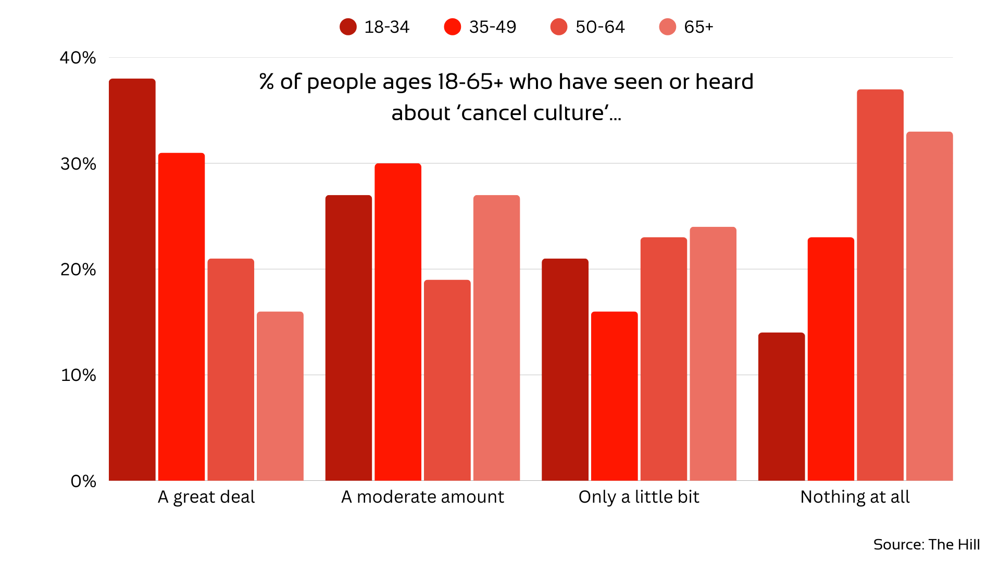
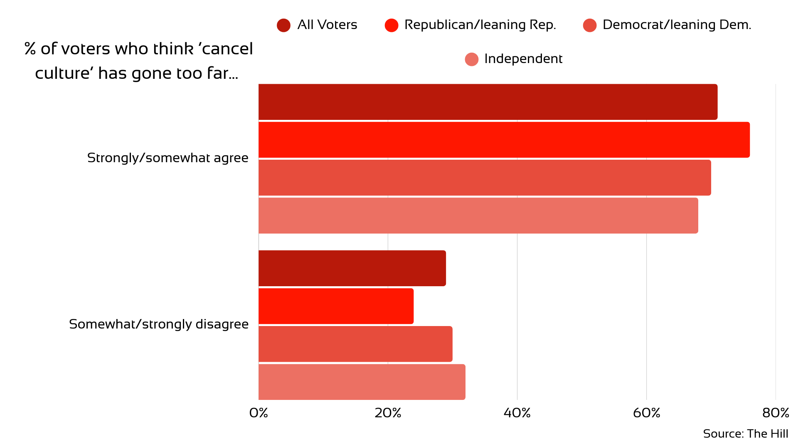

Merriam-Webster defines ‘cancel culture’ as, “the practice or tendency of engaging in mass canceling as a way of expressing disapproval and exerting social pressure.” ‘Cancel culture’ has become a widespread phenomenon, twisting through all social media platforms and targeting celebrities, social media influencers and strangers on the internet. The after effects of ‘cancel culture' can take away jobs, followers, friends and family, or it can generate hate for a month that will die out by the next cycle of trends. So what really is the impact?
Statista reported that as of February 2025, 5.56 billion individuals worldwide were internet users and 5.24 billion of those internet users had engaged with social media (63.9% of the world's population). Additionally, a 2022 survey from The Pew Research Center found that 77% of 18-to-29 year olds internet users are familiar with the concept of ‘cancel culture’ (see Figure 1 for additonal informatiom). Especially after 2020, “the year of cancel(l)ed culture”, ‘cancel culture' is not a foreign phrase and has become very ingrained into various social media platforms.
As represented in Figure 1 above, awareness of 'cancel culture' is split across age groups.
Social media is notoriously fake and all consuming, and the aggression of social media and mental health always tend to go hand-in-hand, especially to the teenage psyche. The first concept that usually accommodates to the world of social media is social conformity. The National Institute of Health conducted a study that concluded ‘cancel culture’ is collectively validating for harmed groups. In other words, insecure individuals take collective action to drag down those who are vulnerable, like influencers and high profile celebrities.
Comment Magazine says cancelling is a part of the culture of violence, e.g. “You have to break a few eggs to make an omelet.” Disregarding physical violence, verbal violence is equally if not more effective, and can be conducted through a screen. As a result, social norms have a tendency to control problematic behavior. Society knows that words have power, and one of those powers is persuasion over a large audience. This leads to band-wagoning and mass trends, which primarily fuels ‘cancel culture’.
‘Cancel culture’ has become a highly politicized topic, mostly polarized behind the question: is it accountability or unfair punishment? According to The Pew Research Center, 62% of Republicans believe the action of cancelling an individual an unfair punishment, while 32% of Democrats agreed with the statement. Alternatively, 65% of Democrats believe that the act of cancelling an individual holds them accountable, 34% of Republicans agreed. Overall, 51% of U.S. adults say calling others out on social media is more likely to hold people accountable, while 45% say it’s more likely to punish people unfairly (see Figure 2 for addtional information). These disagreements can control how long or short being cancelled lasts, all based on majority public opinion.
As represented in Figure 2, political opinion regarding 'cancel culture' can vary over party voters.
Fear is another prominent factor that drives many individuals' decisions online. About 40% of Americans reported avoiding expressing their opinions for fear of reprisal, according to American for Prosperity. The survey shows Americans are responding to negative implications, the possibility of losing one’s job, being ostracized, etc., by changing their speech and keeping quiet. Self-censorship out of fear resists the true success of ‘cancel culture’ by limiting open dialogue and preventing meaningful accountability, as individuals choose silence over engagement to avoid potential backlash.
Legal factors also play a role, 85% of American universities restrict free speech according to FIRE. These policies include restrictions such as limiting when and where students speak, disobey and risk punishment or even expulsion. Framed as an attempt to curb the effects of ‘cancel culture,’ these government-imposed speech restrictions often aim to suppress controversial or offensive expression that could provoke backlash or damage the reputations of influential figures.
The unfortunate reality is that lines between accountability and punishment are becoming blurred. As shown, ‘cancel culture’ can have a strong impact through social media, but can also have a confusing spectrum. Depending on how strong your social media influence is could be the difference between a minor setback in popularity and a mass unfollowing. While some teens still suffer public ridicule, criminals get off scot free; celebrities with resources can recover, small creators can be destroyed. Kanye West was cancelled in 2022 due to his involvement in various controversies, ranging from public indecency to antisemitism. Now, in 2025, he has become the 4th rapper to hit 1 billion streams and has 62.4 million monthly listeners on Spotify. This cycle will most likely continue to evolve as social media advances and ignorance prevails.